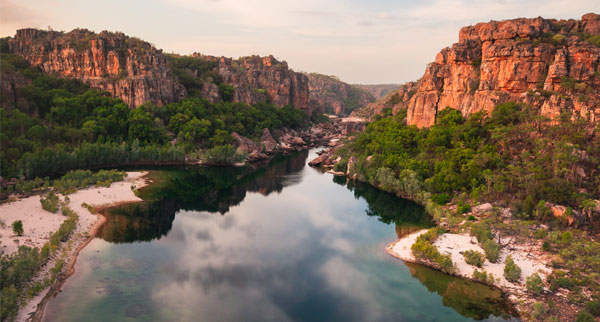

Katie Mcgonagle interviews Sam Hyson, Kakadu National Park Ranger, Northern Territory, Australia.
Click here to download and save as a PDF.
Q. When did you decide you wanted to be a park ranger?
A. I studied environmental science at university with the aspiration to eventually work as a ranger, or in the field to some degree. Having lived in the Northern Territory for five years, when the park ranger job was advertised, I saw it as the perfect opportunity to realise my dream of working with the environment.
Q. What makes Kakadu National Park so special?
A. It is timeless. A lot of the park hasn’t changed in thousands of years. Many other national parks and reserves are highly modified environments that have been impacted by housing development and farming. In Kakadu, you can stand on an escarpment and know the view you are looking at is the same panorama that traditional owners enjoyed centuries ago.
“In Kakadu, you can stand on an escarpment and know the view you are looking at is the same panorama that traditional owners enjoyed centuries ago.”
Q. With so much to see, do you have a favourite spot in the park?
A. I mainly work in the northern end of the park, which is lucky as that is my favourite region. This is a hugely varied environment with floodplains, escarpments and incredible rock art. It’s home to the spectacular Ubirr [rock formation] and the South Alligator River, plus amazing fishing and pockets of rainforest.

Q. Kakadu has a rich Aboriginal history. How can visitors best learn about that heritage?
A. When the interpretive guides are running their tours in the peak season, they are a great opportunity to learn about the various local cultures across the park. There are opportunities to meet with traditional owners who demonstrate customary methods such as weaving and foraging for bush foods. The Taste of Kakadu Festival, which usually takes place in May, is a great event to learn all about bush foods, whether that be traditional methods of cooking or modern takes on the ingredients from some of Australia’s best chefs. A lot of the walks have fantastic interpretive signage so visitors can learn as they explore the park. The Nourlangie lookout and Rock Art site is a mile-long walk with paintings that document life in the region dating back some 20,000 years.
“There is one spot where emu can often be found, which is extraordinary as they are rare in the tropical regions, preferring a more arid environment.”
Q. Kakadu is also known for its varied wildlife – what are your favourite species to spot?
A. That’s difficult as there are so many special sightings, from flocks of geese across the floodplains to the white-bellied sea eagle. There is one spot where emu can often be found, which is extraordinary as they are rare in the tropical regions, preferring a more arid environment. I am lucky to see these standout sightings on a regular basis.
Q. What are some of the biggest challenges you encounter as a park ranger?
A. The seasons bring lots of challenges. We will see two-and-a-half metres of rain in a good wet season, which can cause some logistical issues. Likewise, in the warmer months, we expect droughts and so we have to carefully manage the land. Looking after visitors and working to keep them safe is also a top priority.
Q. What is the best thing about your job?
A. I probably have the best office in Australia. Whether I’m on air boats travelling across the floodplains or driving around in a 4×4, the view is always spectacular.
Sam’s top tip
Don’t rush Kakadu National Park – clients need to stay in the park at least two days to experience all it has to offer. To find out more, have a look at the videos and virtual tours on the park’s website, and complete the Northern Territory module on the Aussie Specialist training course to learn how best to sell this beautiful state.
parksaustralia.gov.au/kakadu
aussiespecialist.com
Read more
Walking holidays to satisfy outdoorsy travellers
The best things to see and do in Yellowstone National Park
Explore the vast, unspoilt landscapes of Canada’s national parks
Top
Tip
Flights have restarted with British Airways, Ryanair, easyJet and AirMalta.
Find out more about Malta’s reopening at the Travel Weekly Restart & Recovery Hub travelweekly.co.uk/restart-recovery/malta
Book
it
A B&B stay at Tivoli Marina Portimão starts at €472 per night in October for a one-bedroom apartment, with a minimum two-night stay. tivolihotels.com/en